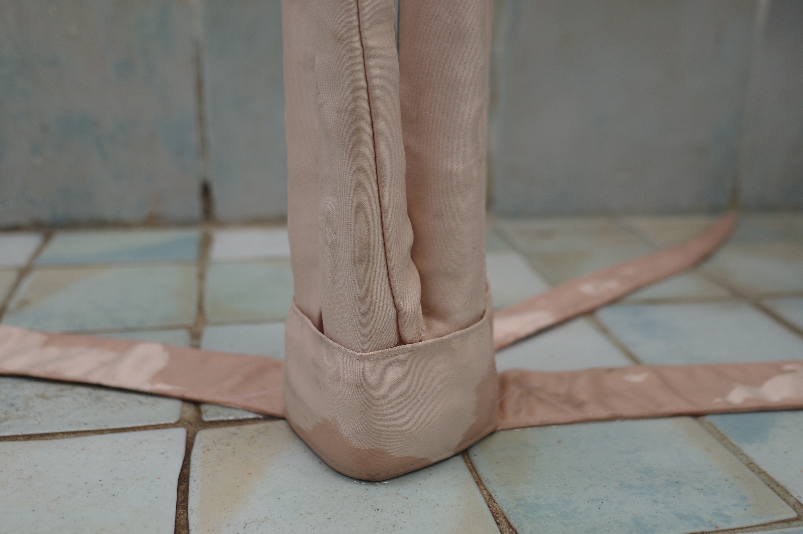
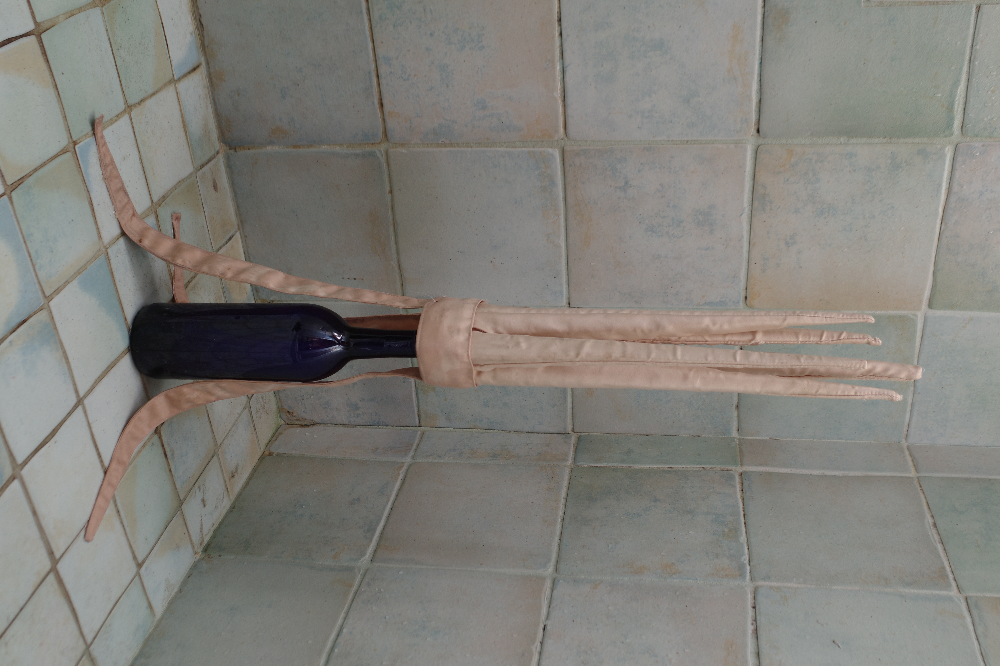
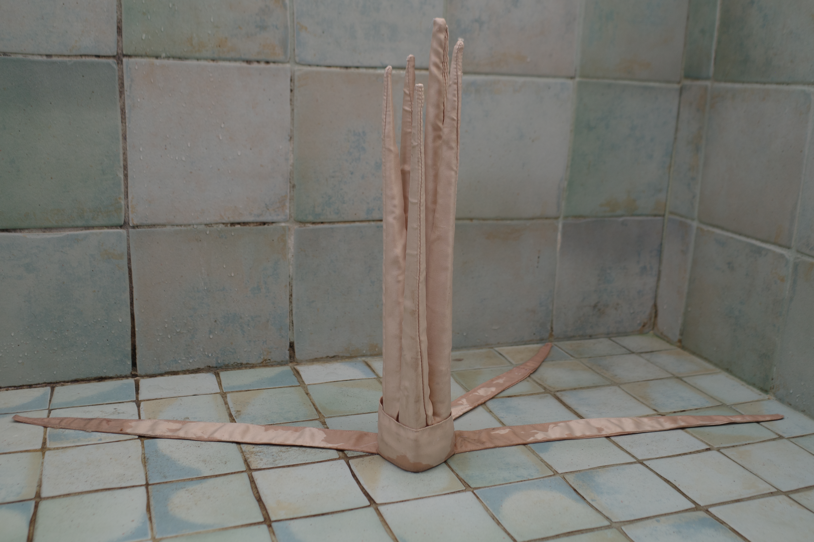
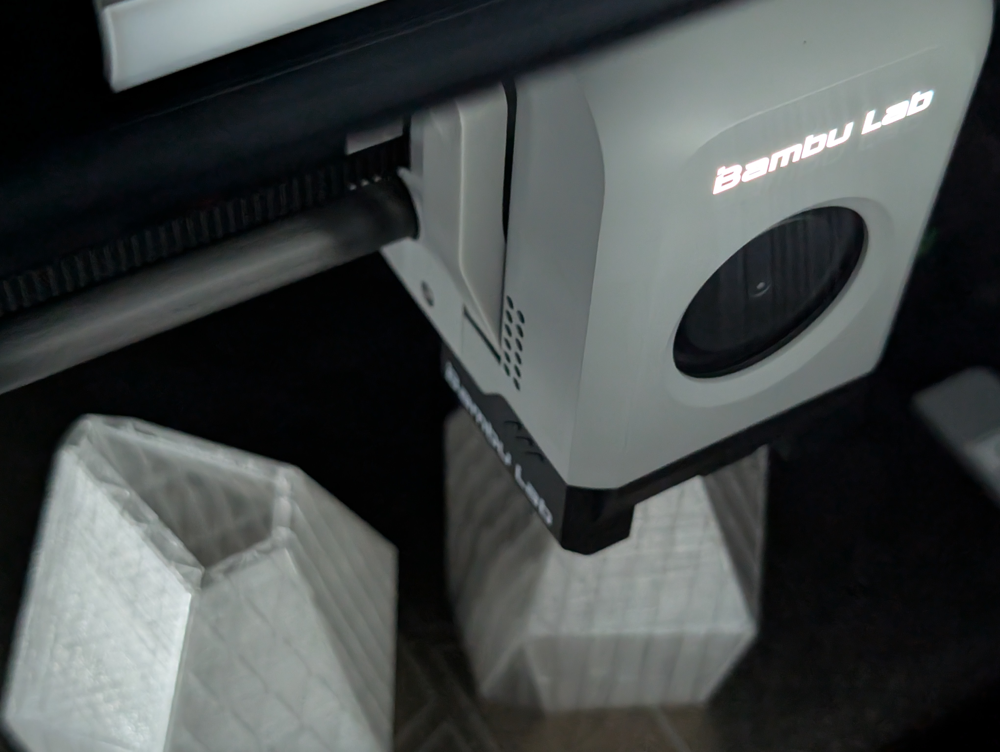
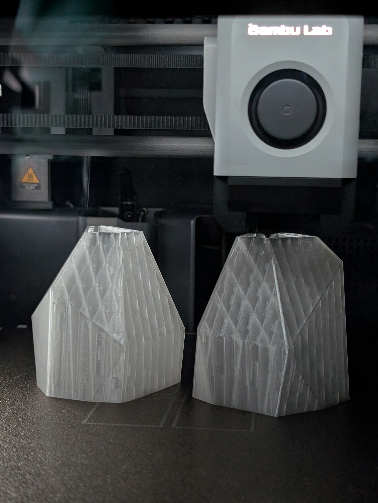
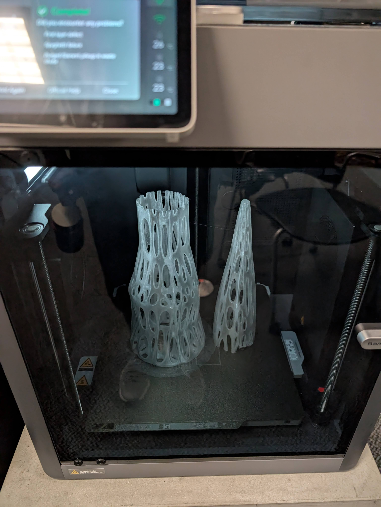
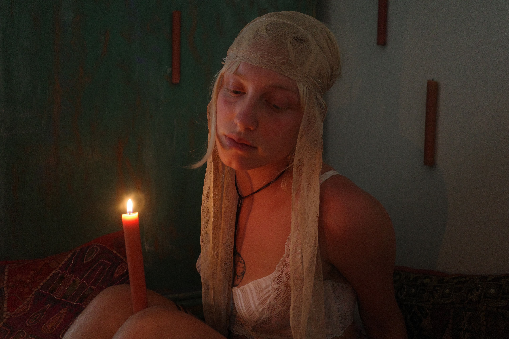
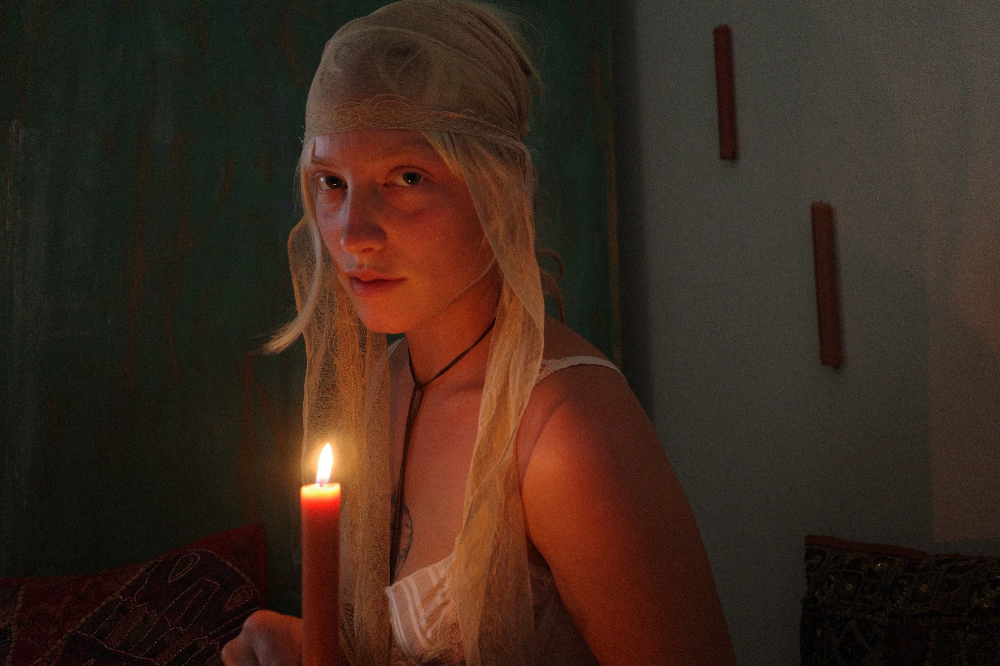
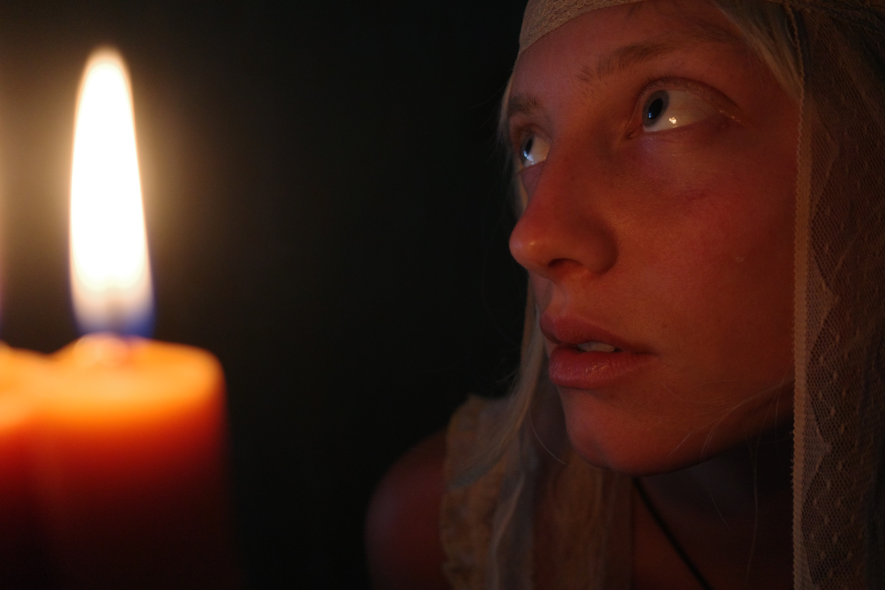
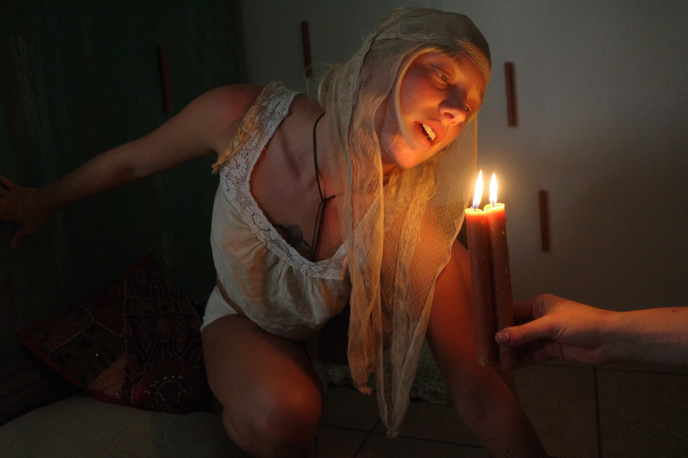

Crown



A hand-crafted crown constructed from wooden dowels and covered with sewn fabric. The piece explores The Virgin Queen Elizabeth and strength in feminine solitude.
Crystal Consciousness



Our installation, "Crystal Consciousness". A cave where optic fiber lights replicate your human heartbeat, the crystals mimic you in changing colors. Your EEG data is captured, translated into audio signals the cave sings back to you. And consonance becomes a scream of genocide.
Crystal Consciousness is about the expansive and threatening dimensions of technology and how these contradictory discoveries are projections of our progressive self. Neurons bloom, reflection is translucent and your environment continues to be your own creation.
My role was Creative Director, 3D modeling and 3D printing.
Scissor




Designed and fabricated, hand-sewn bonnet on model. A candlelit poetry portrait series exploring intimacy, innocence, and power. Shot in a space lit only by flame, the images focus on a female subject uniting ancient divinity in the eternal earth with a softness that almost misleads you. The warm, low light reflecting in her eye, bewitching a shadow across the collarbone. The series was made by three women.